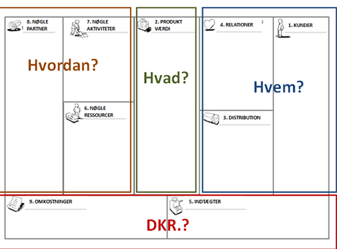

En forretningsmodel er et strategi- og styringsværktøj.
En forretningsmodel beskriver den måde virksomheden skaber og leverer værdi.
Modellen viser indtægter og omkostninger for virksomheden, modellen kan blive ændret og tilpasset løbende af virksomheden
så den passer med ”virkeligheden”, da den ændre sig hele tiden, da der skal tages hensyn til konkurrenter og trender.
Forretningsmodellen bruges til at finde ud af hvem virksomhedens kunder er, hvilken værdi den kan tilbyde deres kunder,
og hvordan der kan skabes relationer til kunderne.
En forretningsplan er en konkret plan for virksomhedens mål og plan for hvordan de skal opnås.
En forretningsplan beskriver virksomhedens mål og værktøjer der skal bruges for at gennemføre den planlagte udvikling.
Forretningsmodellen vil typisk indgå som en del af virksomhedens forretningsplan.
Business model canvas er en velkendt metode til at beskrive og udvikle en forretningsmodel for virksomhederne. Indholdet i business model canvas
